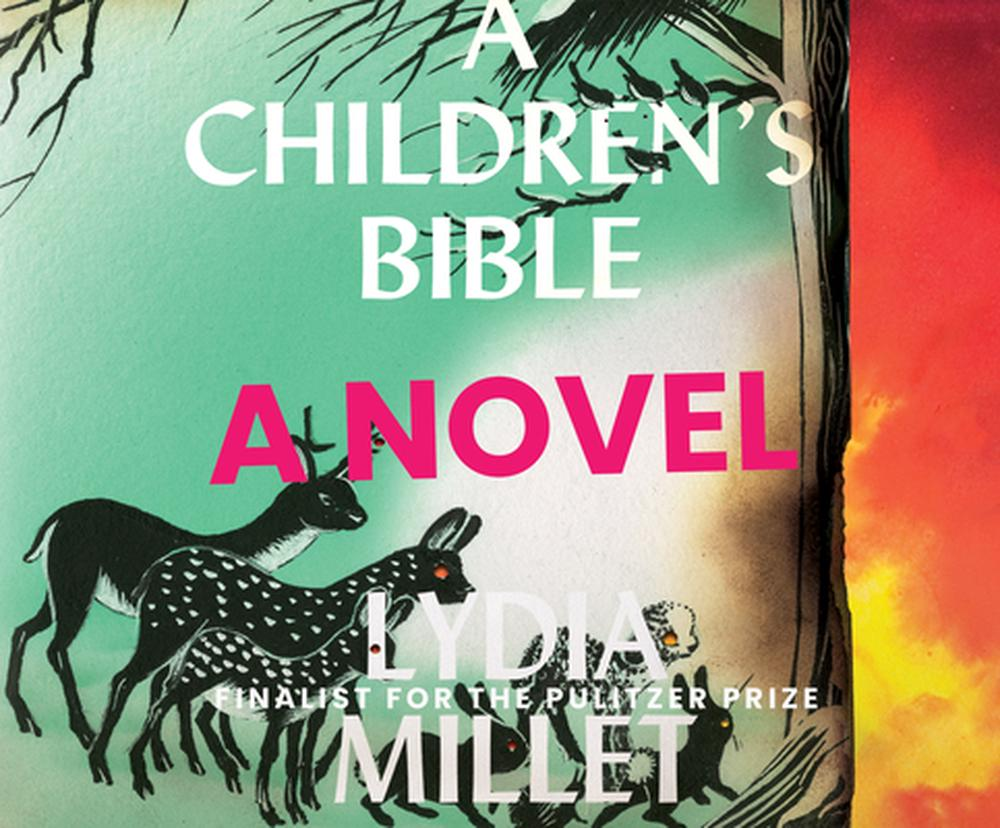

Welcome to our critical casebook on Lydia Millet’s novel A Children’s Bible. This casebook was crafted by Millikin University students enrolled in Dr. Tony R. Magagna’s English 202: Writing About Literature course during the Fall 2021 semester. Although A Children’s Bible has enjoyed incredible critical acclaim since its publication in 2020, including being shortlisted for the National Book Award, there has been relatively little published scholarship dedicated to the novel. Thus, the students whose work is collected here have put together this casebook both to build on the academic conversation about the work, and to showcase their own original critical contributions to the field of literary scholarship. By exploring this website, we hope that you will learn more about Millet’s incredible novel, the references embedded in it, and the various themes that it confronts.https://www.nationalbook.org/2020-national-book-awards-finalists-announced/
In addition to the in-depth academic analyses presented here, you will also find contextual information that we feel is useful to understanding and appreciating A Children’s Bible. All the resources, information, and scholarship presented in this casebook have been generated and curated by the English 202 students themselves. A Children’s Bible: Critical Casebook takes its proud place among several other casebooks produced by students in Millikin University’s English department. http://casebooks.millikinenglish.org